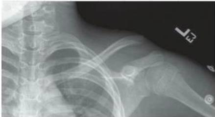

OrtoQuestões
Sala da pediatriaParece de adulto. Que lesão é esta?
Menino de 11 anos, atropelado, com dor no ombro esquerdo. TEOT 2025.
AÚmero proximalBColo da escápulaCPseudoluxação ACDRotura coracoclavicular
A placa com o nome sai mais tarde.

Autor desconhecido
Ombro esquerdo, 11 anos
Radiografia. Acervo da prova TEOT 2025.
Menino atropelado, com dor no ombro. Arraste e leia a placa.
Um menino de 11 anos, vítima de atropelamento por carro, apresenta-se na emergência com queixa de dor no ombro esquerdo e impotência funcional. Conforme a imagem a seguir, o diagnóstico mais provável é de:
Deixe a sua atribuição nos comentários.
01FAIXA
O olhar. A clavícula distal está deslocada em relação ao ombro, num esqueleto que ainda está crescendo.
02FAIXA
O truque. A epífise distal, pouco ossificada, fica alinhada ao acrômio enquanto a metáfise se desloca. A parte de cartilagem não aparece no raio X.
03FAIXA
Os bastidores. Os ligamentos coracoclaviculares costumam seguir presos na manga periosteal.
Resposta C
Pseudoluxação acromioclavicular
Lesão fisária ou metafisária da clavícula distal.
Na criança, a aparência de luxação acromioclavicular costuma ser lesão da fise da clavícula distal. Reconhecer a pseudoluxação evita aplicar classificações e tratamentos do adulto a uma lesão pediátrica.
Idade e mecanismo entram na leitura da imagem. A conduta depende do deslocamento, das partes moles e da avaliação completa.
Úmero proximalSeria vista no úmero; a imagem aponta a clavícula distal.
AColo da escápulaExige linha de fratura na escápula.
BRotura coracoclavicularLeva o mecanismo do adulto para a criança.
DPara a provaCriança com cara de luxação acromioclavicular: pense primeiro em pseudoluxação, com os ligamentos coracoclaviculares presos à manga periosteal.
Menino de 11 anos, atropelado, com dor no ombro esquerdo. TEOT 2025.
A placa com o nome sai mais tarde.
Pseudoluxação acromioclavicular
Resposta C · TEOT 2025
Na criança, a clavícula distal desloca pela fise, e os ligamentos coracoclaviculares seguem presos à manga periosteal.
A visita completa está no feed.